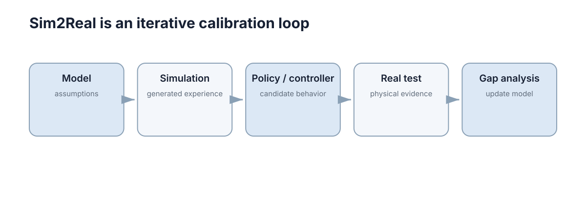

Sim2Real & Real2Sim
Sim2Real 不是一次性的“把仿真模型导出到真实机器人”，而是一条反复迭代的闭环：仿真训练 → 实机验证 → 发现偏差 → 用真实数据校准仿真 → 再训练。 Real2Sim 就发生在这个回流阶段。

把这条闭环看成“一次迁移”还是“持续迭代”，决定了工程做法完全不同：前者会用一个总体成功率判断成败，后者会把每次失败归入具体误差类别并更新仿真参数。
迁移前先列出误差预算
先把“误差预算”定义清楚：设第 \(i\) 项差异的幅度为 \(\epsilon_i\)，任务指标对它的敏感度为 \(c_i = \partial J / \partial \epsilon_i\)，则总的任务指标误差可近似写成
这条线性近似说明两件事：差异大的项不一定重要，敏感度高的项才重要；并且预算必须逐项列出，因为总量会掩盖主导项。迁移前先把可能影响结果的差异列成表：轮径误差多少、控制延迟多少、相机曝光差异多大、摩擦范围是多少、传感器噪声是否一致。
| 误差项 | 可否单独测量 | 测量方法 | 不可测时的替代做法 |
|---|---|---|---|
| 轮径 / 基线 | 可 | 直行与原地旋转标定 | — |
| 执行器延迟 | 可 | 阶跃响应辨识 | — |
| 摩擦与地面 | 部分可 | 制动与打滑试验 | 用行为差异反推 |
| 视觉外观 | 不可 | — | 用域随机化覆盖 |
| 感知模型偏差 | 不可 | — | 监控残差分布 |
| 载荷与惯量 | 可 | 称重与转动惯量试验 | — |
注意“不可测量”的三项恰好是失败最常出现的区域：外观与感知偏差无法用少量参数表达，只能靠分布覆盖，这也解释了为什么 Sim2Real 的难点常常不在动力学上，而在感知与场景分布上。
第三列比第一列价值更高：能测量的项可以继续收敛，不能测量的项只能靠覆盖。把两类混在一起讨论“模型不准”，就会陷入无限调参，因为其中一半问题在原理上无法用调参解决。
预算表还应有版本：每次完成一轮 Real2Sim，就更新一次各项估计值与实测值。没有被更新的预算表会在几次迭代后变成一张历史文档，而不是决策依据。
列出预算的另一个好处是它可以反向约束实验设计：若某项差异的敏感度未知，就需要专门设计一组只改变该项的实验，而不是在综合场景里盲测。
误差预算的量化
误差预算的作用是把“差距”拆成可测量的分项，并估计每一项对任务指标的传导：
| 误差来源 | 典型量级 | 直接后果 | 对任务指标的传导 |
|---|---|---|---|
| 轮径 / 基线误差 | 1%–5% | 里程计尺度偏差 | 长距离位置漂移线性增长 |
| 控制延迟 | 20–200 ms | 相位滞后 | 高速时振荡、跟踪误差增大 |
| 摩擦参数偏差 | 10%–50% | 减速距离不符 | 安全余量被吃掉 |
| 质量 / 惯量偏差 | 10%–30% | 加速度响应差异 | 控制器增益需重调 |
| 传感器噪声 | 2–5 倍差异 | 滤波权重失衡 | 估计方差与收敛速度变化 |
| 时间戳偏移 | 10–100 ms | 融合错位 | 运动物体伪影、定位偏差 |
一个实用做法是给每一项标注“可否在实机上单独测量”：能测量的项直接进入 Real2Sim 的参数更新；不能测量的项则需要通过行为差异反推，属于更难处理的一类。
量化到具体数字能让优先级变得清楚。设跟踪误差为 \(e\)、控制延迟为 \(\tau\)、速度为 \(v\)，延迟导致的等效位置误差近似为 \(e_\tau \approx v\tau\)：在 \(v = 2\) m/s、\(\tau = 100\) ms 时约为 20 cm，而典型的跟踪误差目标常在 5 cm 量级。也就是说，延迟单独一项就吃掉了全部误差预算的四倍，此时任何参数微调都不会有效，必须先从时序入手。
| 误差项 | 敏感度 \(c_i\) | 典型 \(\epsilon_i\) | 贡献 \(c_i \epsilon_i\) | 优先级 |
|---|---|---|---|---|
| 控制延迟 | \(\approx v\) | 100 ms | 约 0.20 m | 高 |
| 轮径误差 | \(\approx L/r\) | 2% | 约 0.02 m / 1 m | 中 |
| 摩擦偏差 | \(\approx t_{\mathrm{brake}}\) | 30% | 约 0.15 m | 高 |
| 传感器噪声 | \(\approx\) 滤波增益 | 2 倍 | 约 0.03 m | 低 |
| 时间戳偏移 | \(\approx v\) | 30 ms | 约 0.06 m | 中 |
这张表把“差距”变成可排序的清单：先修高优先级项，再看剩余预算是否够用。若最高优先级项未被修复，其他项的改进都会被它掩盖。
需要注意敏感度本身也随工况变化：低速时延迟不敏感，高速时成为主导；静止时摩擦偏差不可见，制动时才暴露。因此预算表应至少按“低速 / 高速”两档分别评估。
Sim2Real 的分阶段验证
先在低速度、宽安全区验证基本动作，再扩大速度和场景复杂度。直接从仿真跳到高风险实机条件，很难区分算法错误、接口错误和模型偏差，逐级测试同时能为后续 Real2Sim 收集更干净的数据。
分阶段的原则是每一阶段只引入一类新风险，这样失败可以归因。若某一阶段同时引入新接口、新环境和新硬件，任何失败都会变成一次全面排查。
| 阶段 | 新引入的风险 | 主要失败症状 | 归因手段 |
|---|---|---|---|
| S0 纯仿真 | 无 | 指标不达标 | 算法与超参 |
| S1 加噪仿真 | 传感噪声、延迟 | 成功率下降 | 敏感性分析 |
| S2 硬件在环 | 时序、通信、驱动 | 周期抖动、丢帧 | 实时性度量 |
| S3 实机限速 | 真实物理与接口 | 停车不稳、跟踪偏差 | 对比仿真波形 |
| S4 完整任务 | 全部叠加 | 偶发失败 | 差距清单归因 |
| S5 长时运行 | 漂移与退化累积 | 指标缓慢劣化 | 趋势分析 |
验收时每阶段都要记录与上一阶段的指标差，而不是只记录绝对水平。绝对水平无法说明是模型问题还是任务本身变难，而差值可以直接放进误差预算表。
阶段之间还应设置“退出准则”：只有当前阶段的关键指标稳定（例如连续 3 次运行方差小于 10%），才允许进入下一阶段。缺少退出准则时，团队往往会因为进度压力而带病推进，最终在高风险阶段一次性暴露全部问题。
量化上，可以先给每个阶段设定一个“失败可接受量”：S1 允许成功率下降 10%，S2 要求实时因子不超过 1，S3 要求跟踪误差不超过仿真值的 3 倍。数值本身可以调整，关键是它必须事先写出。
阶段划分还应与“数据用途”绑定：S1、S2 阶段可以适当放开安全边界以收集更多数据，S3 起必须以安全为主。若数据采集与安全验证放在同一阶段混做，通常两边都做得不彻底。
另一个实用做法是给每个阶段固定一组“只看不调”的参考场景。这些场景在整个迭代过程中保持不变，用于跨版本比较；若它们的表现在代码演进中持续改善，说明迁移在推进，而不是只在某个场景上过拟合。
分阶段迁移与逐级验收
阶段划分的关键是每阶段只引入一类新风险，这样失败可归因：
| 阶段 | 环境 | 新增风险 | 验收条件 | 退出准则 |
|---|---|---|---|---|
| S0 纯仿真 | 无噪声 | 无 | 任务成功率达目标 | 指标稳定 |
| S1 加噪仿真 | 噪声 + 延迟 | 传感与相位 | 成功率下降在容忍内 | 无系统性偏差 |
| S2 硬件在环 | 真实控制器 + 仿真被控对象 | 时序与通信 | 控制周期稳定、无丢帧 | 实时因子 \(\le 1\) |
| S3 实机限速 | 真实硬件、低速 | 物理与接口 | 无碰撞、可稳定停车 | 跟踪误差达标 |
| S4 完整任务 | 实机全速 / 全场景 | 全部 | 任务与安全指标同时达标 | 可重复复现 |
最常见的跳过是 S2 直接到 S4：控制周期抖动、通信延迟这些在仿真里不存在的问题，会与算法问题同时爆发，导致排查成本成倍上升。
实时因子是 S2 最关键的量化指标：设单步仿真所需墙钟时间为 \(t_{\mathrm{wall}}\)、仿真步长为 \(\Delta t_{\mathrm{sim}}\)，则 \(\mathrm{RTF} = t_{\mathrm{wall}} / \Delta t_{\mathrm{sim}}\)。要求 \(\mathrm{RTF} \le 1\) 表示仿真能跟上实时；当 \(\mathrm{RTF}\) 在 0.8–1.0 之间抖动时，硬件在环的时序会周期性打嗝。
| \(\mathrm{RTF}\) | 含义 | 允许用于 |
|---|---|---|
| \(\le 0.5\) | 余量充足 | 硬件在环、长时运行 |
| \(0.5\)–\(0.9\) | 可用但有抖动 | 短时验证 |
| \(0.9\)–\(1.0\) | 临界 | 仅限排查 |
| \(> 1.0\) | 跟不上实时 | 不可用于在环测试 |
硬件在环的另一个价值是暴露时间语义：控制器以为自己在 100 Hz 上运行，而实际执行周期可能是 100 Hz 上下抖动 ±20%。这类抖动在纯仿真中不存在，却足以让依赖固定周期的积分器产生累积误差。
Real2Sim 用真实数据反过来修正模拟器
可以根据真实轨迹估计摩擦和执行器延迟，根据传感器日志估计噪声、bias 和丢包模式，根据相机数据更新纹理与光照范围。
Real2Sim 不要求把每个物理参数都精确辨识出来，只需要让仿真在任务相关观测和行为上更接近实机。参数辨识的数学形式是最小化仿真与实测残差：
其中 \(\phi\) 是待辨识参数向量、\(y^{\mathrm{real}}_k\) 与 \(y^{\mathrm{sim}}_k\) 分别是第 \(k\) 步的实机与仿真观测。注意这个目标函数是可辨识性受限的：如果某参数对观测的影响小于噪声，最小化过程就无法确定它，这也是很多参数标不出稳定值的原因。
| 真实数据 | 可估计的量 | 方法 |
|---|---|---|
| 直线 / 圆周轨迹 | 轮径、基线、摩擦 | 最小化轨迹残差 |
| 阶跃指令响应 | 执行器延迟、时间常数 | 系统辨识 |
| 静止传感器日志 | 噪声方差、零偏 | 统计估计 |
| 重复经过同一路段 | 环境一致性误差 | 残差分布分析 |
| 制动试验 | 减速能力、延迟 | 拟合减速曲线 |
| 长时运行日志 | 漂移速率、温升效应 | 趋势回归 |
辨识结果的可用性需要交叉验证：把一部分数据用于辨识、另一部分用于验证残差。若验证残差与训练残差差距很大，说明参数过拟合到了某段特定行为，迁移到新场景时反而更差。
另一个常见错误是只辨识“平均值”而不辨识“范围”。真实摩擦系数是分布而不是常数：干燥地面 \(\mu \approx 0.8\)、湿滑地面可能降到 \(0.4\) 以下，而仿真若固定为一个中位数，制动距离的尾部估计就会严重偏低。
因此 Real2Sim 的输出应是分布或区间，而不是单点参数：给每个关键量估计一个范围，并把它直接作为域随机化的采样区间。这样一次数据采集可以同时服务于参数校准与鲁棒性训练两件事。
迁移时要尽量保持软件接口一致
仿真和实机若都输出相同 ROS Topic、坐标系和控制接口，切换平台时主要变化只是驱动和数据源。若算法在仿真中依赖“直接读取真值状态”，实机没有对应输入，迁移会从一开始就失败。
接口一致性的具体含义可以拆成一张对照表：
| 接口项 | 仿真中的形态 | 实机中的形态 | 不一致的后果 |
|---|---|---|---|
| 话题 / 消息类型 | 自定义或标准消息 | 驱动发布的真实消息 | 迁移时需改适配层 |
| 坐标系 | 简化 TF 树 | URDF 决定的真实 TF | 变换链断裂 |
| 控制接口 | 直接给速度 / 力矩 | 经驱动与限幅 | 指令语义不同 |
| 时间戳 | 逻辑时间 | 采集时刻 | 融合错位 |
| 状态反馈 | 直接取真值 | 需估计 | 代码依赖不存在的输入 |
| 参数配置 | 硬编码 | 可调参数服务 | 换平台需改代码 |
“直接读取真值状态”是关键歧义点：它在仿真中让一切工作正常，却把估计模块从测试路径中排除掉了。如果估计模块从未被仿真测试过，那么迁移第一次遇到的失败几乎必然来自它。
一个可执行的判据是“改动行数”：从仿真迁移到实机所需的代码改动若超过几行适配层，说明接口抽象位置选错了。把差异集中在驱动层，是让仿真与实机共用同一套上层代码的前提。
若要进一步收紧，可以在仿真中引入“估计器占位”：用带噪声的估计结果替代真值，甚至刻意为估计结果加入偏差，观察上层策略是否仍然稳定。这一步常能提前发现对真值的隐性依赖。
接口一致的另一个维度是“失败语义”：仿真中某个话题中断时可能什么都不发生，而实机上会触发驱动的错误码。若上层只处理数据、不处理错误码，迁移后就会出现“数据没了但系统毫不知情”的状态，这是最隐蔽的一类接口不一致。
因此接口对照表应与自动化测试绑定：每次改动接口后，跑一遍对照检查，比较仿真与实机两端的话题名、发布频率、时间戳字段与单位。这类脚本便宜、执行快，却能在早期拦住最昂贵的迁移缺陷。
现实闭环评估
仿真只是低成本试验场。模型、随机化和训练技巧是否有效，最终仍需要真实系统上的成功率、跟踪误差、碰撞率、稳定时间等指标验证。
现实评估的价值不在于“跑了实机”，而在于用实机数据回答一个具体假设。若一次实验之后，误差预算表没有任何一行被更新，那么这次实验只产生了一次运行记录。
| 评估维度 | 观察量 | 典型门槛 | 若未通过说明 |
|---|---|---|---|
| 成功率 | 任务完成比例 | 与仿真差距 \(\le 10\%\) | 存在系统性偏差 |
| 跟踪误差 | 均方根误差 | \(\le\) 设计目标 | 控制器或模型问题 |
| 安全 | 最小间距、限幅触发 | 不越界 | 余量计算偏乐观 |
| 效率 | 完成时间、能耗 | 与仿真同量级 | 参数或限速差异 |
| 稳定性 | 指标跨运行方差 | \(\le 10\%\) | 未受控的外部因素 |
| 可恢复性 | 从降级恢复的时间 | \(\le\) 设计上限 | 恢复逻辑未验证 |
闭环评估的常见失败是“只看一次运行”：单次成功无法区分鲁棒与幸运。在扰动下重复运行并报告分布，才构成评估；否则一次漂亮的演示会把一个带偏的仿真参数固化进下一轮迭代。
量化上，可以把评估结果压缩成一个差距向量 \(\mathbf{g} = (g_{\mathrm{succ}}, g_{\mathrm{err}}, g_{\mathrm{safe}}, g_{\mathrm{time}})\)，每一维定义为“实机值相对仿真值的比值或差值”。这样两轮迭代之间的进展可以逐维比较，而不是用一个模糊的“好多了”来总结。
评估还应当包含反向验证：如果仿真预测某项改动会带来 20% 的提升，就应在实机上验证这一预测。预测与实测一致，说明仿真模型抓住了主要因素；不一致则说明预算表漏项。
评估前必须先冻结“任务定义”：起点分布、成功判据、超时阈值都要写死。否则实机一轮、仿真一轮，两边连“什么算成功”都不一致，比较就失去意义。
还应当记录未被要求的观察量，例如限幅触发次数、最大速度、平均计算负载。它们不进入验收门槛，却常常是解释差距来源的第一手线索。
迁移成功要用同一组任务指标比较
仿真和实机应尽量使用一致指标，例如轨迹误差、碰撞率、完成时间、能耗和控制平滑度。只有这样才能判断差距来自哪里。“实机能跑起来”只是最低标准；真正需要观察的是性能下降幅度是否在可接受范围，以及误差是否随环境变化保持稳定。
| 指标 | 仿真值 | 实机值 | 判读 |
|---|---|---|---|
| 成功率 | 98% | 85% | 差距大，需查归因 |
| 跟踪误差 | 0.02 m | 0.06 m | 可接受但需记录 |
| 碰撞率 | 0 | 0 | 安全底线成立 |
| 完成时间 | 40 s | 52 s | 与限速策略相关 |
报告的应是这两列的差，而不是任何一列的绝对值。 为了可比较，还需要固定比较口径：同一任务定义、同一初始条件分布、同一评分脚本。三者任一改变，两列之差就不再可比。
把差距归一到 \([0,1]\) 区间可以方便设定门槛：设仿真指标为 \(J_{\mathrm{sim}}\)、实机指标为 \(J_{\mathrm{real}}\)，定义相对差距 \(g = (J_{\mathrm{real}} - J_{\mathrm{sim}}) / J_{\mathrm{sim}}\)。当 \(g \le 0.2\) 时可认为迁移基本成功；\(g > 0.5\) 时通常存在至少一个未建模的主导因素。
| 指标类别 | 比较口径 | 允许差距 \(g\) | 越界后的动作 |
|---|---|---|---|
| 任务性能 | 成功率、完成时间 | \(\le 0.2\) | 回到误差预算归因 |
| 控制品质 | 跟踪误差、平滑度 | \(\le 0.3\) | 检查延迟与增益 |
| 安全 | 越界次数、最小间距 | \(\le 0\) | 立即停止并复盘 |
| 效率 | 能耗、计算负载 | \(\le 0.3\) | 检查限速与调度 |
安全类指标的允许差距必须为零：任何实机越界都说明余量模型错了，此时讨论其他指标的差距没有意义。
为了比较可重复，建议把评分脚本放在与仿真、实机代码同一个仓库里，并以同一份随机种子列表驱动多轮运行。评分脚本本身也要版本化：一次无意的评分口径调整，会制造出看似巨大的性能差距。
建立可追踪的差距清单
每次实测失败都应归入模型、传感、执行、时延或环境外观等具体类别，并记录证据与修正结果。这样 Real2Sim 更新才能针对可验证假设，而不是反复整体调参。差距清单也是决定下一轮实验优先级的依据。
| 归因类别 | 可测量的证据 | 常见修正路径 | 验证方式 |
|---|---|---|---|
| 模型 | 轨迹残差、参数拟合 | 更新质量、惯量、摩擦区间 | 复现同一轨迹 |
| 传感 | 噪声方差、零偏、丢帧率 | 更新噪声模型与延迟 | 静止与匀速试验 |
| 执行 | 阶跃响应、死区 | 更新延迟与增益 | 重复阶跃测试 |
| 时延 | 时间戳对比、相位 | 加入固定偏置与抖动 | 阶跃响应对比 |
| 环境外观 | 图像 / 点云分布差异 | 调整随机化区间 | 跨环境复测 |
| 感知模型 | 检测召回率下降 | 补训练数据或调整随机化 | 跨光照复测 |
清单的目的不是记录失败，而是让归因变成可检索的资产：当同一现象第二次出现时，能直接调到上次的证据与修正措施，而不必重新排查一遍。
清单能否生效，取决于它是否先于修正而存在：先写下“观察到什么、归到哪一类、用什么证据”，再动手改参数。反过来先改参数再补记录，清单会退化成一份事后解释。
优先级排序可以用两个维度相乘：发生频率与后果严重度。频率高且后果严重的项优先修复；频率极低但后果致命的项则不适合靠调参解决，而应通过运行时保护兜住。
清单还应记录“未解决但其影响可接受”的项，并给出接受理由与复核时间。把已知问题显式标为可接受，比让它停留在口头共识里更安全，因为后者在下一次迭代中会悄然被遗忘。
为了让清单可用，字段应保持最小但有结构：现象、类别、证据、措施、判据。字段过多会让人不愿填写，字段过少又无法支撑自动化回归。
发生频率与后果严重度的乘积决定了验证手段：高频项靠回归测试保护，低频高危项靠运行时监控兜底，中间项靠定期演练。三类手段不能互相替代，也不能只保留其中一类。
差距清单与回归防护
差距清单的价值在于防止已修复的问题重新出现：
| 字段 | 内容 | 用途 |
|---|---|---|
| 现象 | 实机观察到的具体失败 | 可检索、可复现 |
| 归因类别 | 模型 / 传感 / 执行 / 时延 / 外观 | 决定修正路径 |
| 证据 | 日志、轨迹、参数对比 | 防止主观归因 |
| 修正措施 | 参数更新或模型改动 | 形成 Real2Sim 更新 |
| 回归判据 | 用什么检查确认不再出现 | 加入自动化测试 |
最后一行是清单能否长期生效的关键：差距只有在被写成可自动执行的检查后才算真正关闭。否则下次改动很可能悄悄把它带回来，而团队只会觉得“这个机器人有时候不太稳”。
回归防护的最小实现是三条：把修正后的参数固化进配置而非代码注释；为每个已关闭差距写一条自动化检查；在 CI 中对仿真指标设置阈值，使性能退化在合入前就被发现。
自动化检查的设置也有陷阱：若阈值过于宽松，检查永远通过；若阈值基于单次运行设定，噪声会让它随机失败。稳妥做法是用多次重复运行的均值与标准差设定阈值，例如“均值不劣于基线 5%，且标准差不超过基线 20%”。
最后一层防护是把差距清单与部署流程连接起来：每次上线前的回归必须覆盖清单中所有“已关闭”项。没有回归门禁的清单只是一篇日记，它记录历史，却不改变未来。
回归门禁要设在“最便宜的位置”：能在仿真里跑完的检查就不要留到实机，能用统计指标判定的就不要靠人工观察。门禁越便宜，就越可能被长期执行，也越可能在压力下被保留。
清单与门禁都需要负责人：每条差距指定一个关闭责任人，每次门禁失败指定一个响应人。没有负责人的流程会在进度压力下第一个被跳过，而它恰恰是防止旧问题复发的最后一环。
下一步：本章给出闭环流程，Modeling & Physics Simulation 与 Robot & Sensor Simulation 决定仿真的可信度上限，Reality Gap & Domain Randomization 处理系统性差异的覆盖策略。迁移后的回归验证见 pytest & Debugging，接口契约见 Modular Design & APIs。